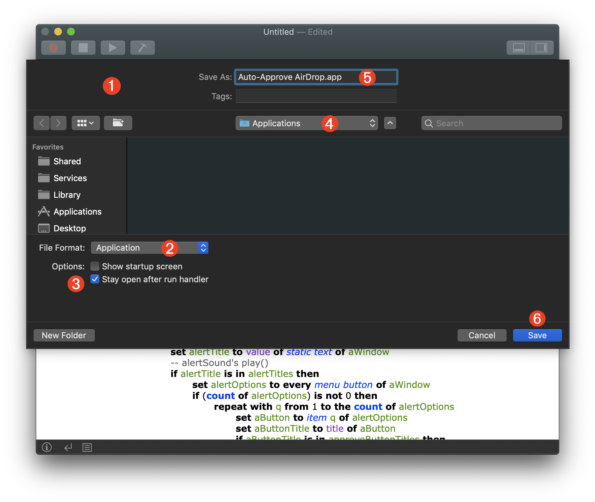
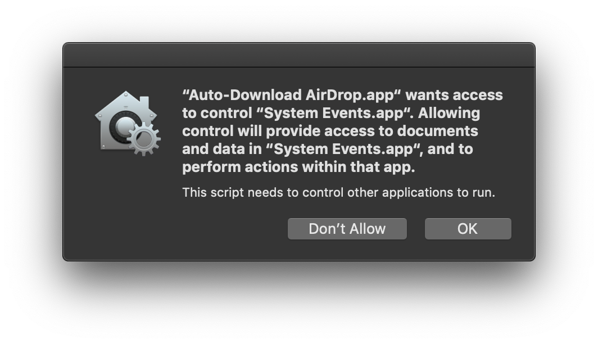
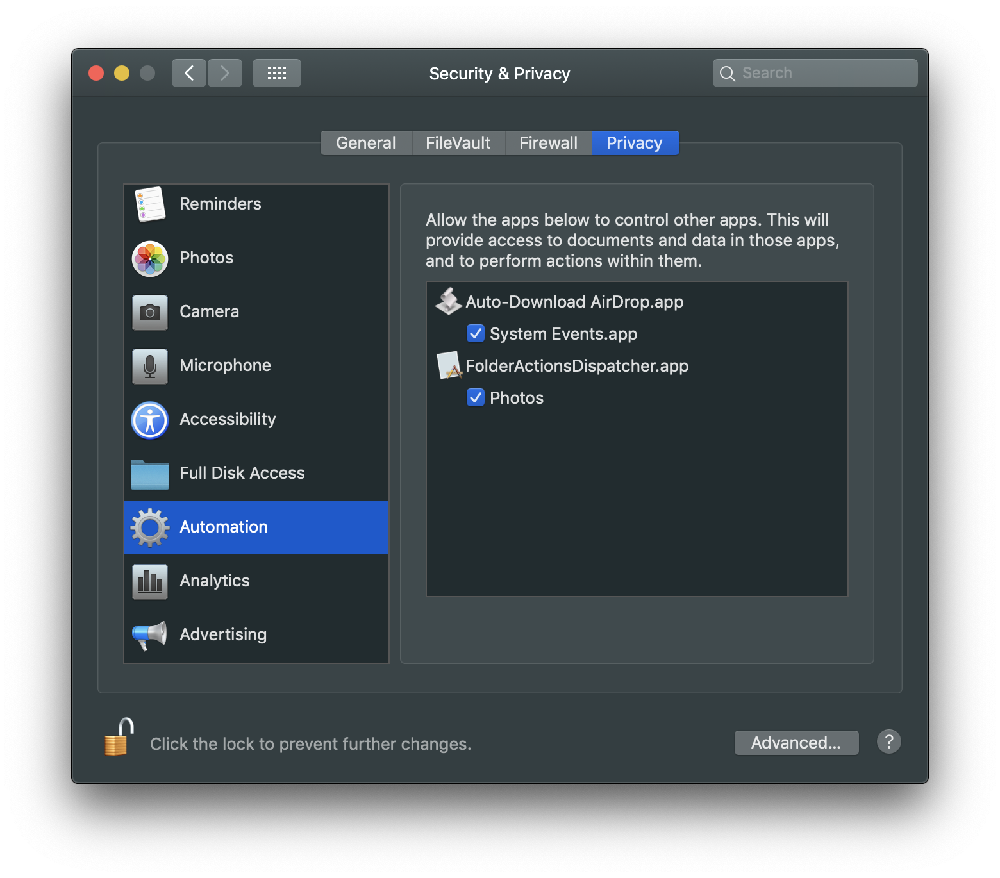
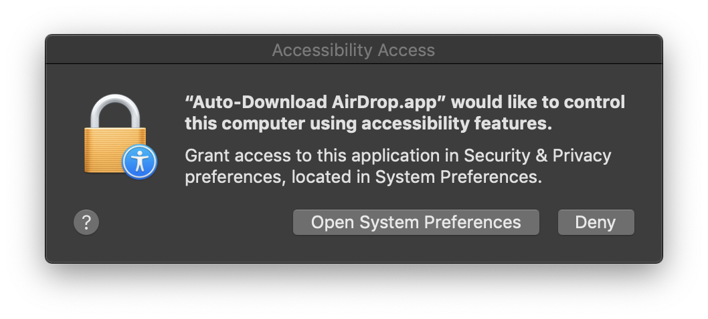
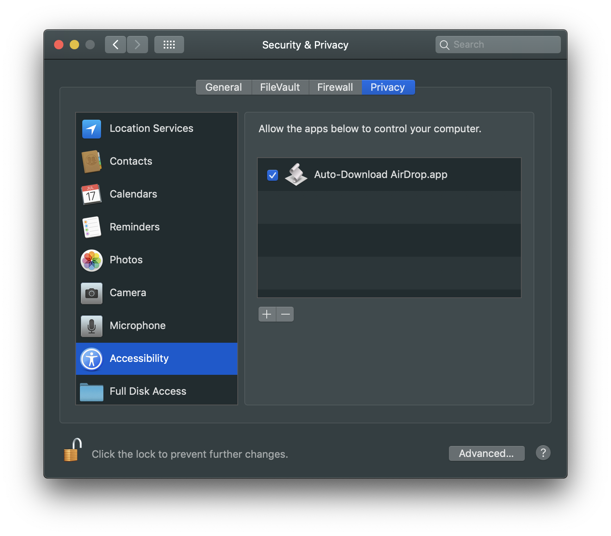

TAP TO HIDE SIDEBAR


Notification Auto-Approval Applet
In macOS, for the sake of security and by design, there are no mechanisms to have Notification Center alerts automatically approved or dismissed.
However, as this folder action example of an autonomous AirDrop image repository demonstrates, there may be times when you intentionally want the computer automatically approve incoming AirDrop downloads.
The AppleScript applet provided on this page can perform the task of automatically approving downloads from AirDrop notification alerts.
IMPORTANT: This applet is designed to work with macOS Mojave (v10.14) or higher. It will not work with earlier versions of macOS.
DOWNLOAD the completed notification approval applet. (macOS Mojave required)
| Notification Auto-Approval Applet | ||
| 01 | use framework "Foundation" | |
| 02 | use scripting additions | |
| 03 | ||
| 04 | property alertTitles : {"AirDrop"} | |
| 05 | property closeButtonTitles : {"OK", "Decline", "Close"} | |
| 06 | property approveButtonTitles : {"Accept"} | |
| 07 | property actionMenuItem : "Save to Downloads" | |
| 08 | ||
| 09 | global monitorSound, denySound, approveSound, alertSound | |
| 10 | ||
| 11 | on run | |
| 12 | set monitorSound to current application's NSSound's soundNamed:"Bottle" | |
| 13 | set alertSound to current application's NSSound's soundNamed:"Morse" | |
| 14 | set denySound to current application's NSSound's soundNamed:"Frog" | |
| 15 | set approveSound to current application's NSSound's soundNamed:"Glass" | |
| 16 | end run | |
| 17 | ||
| 18 | on idle | |
| 19 | try | |
| 20 | tell application "System Events" | |
| 21 | tell process "NotificationCenter" | |
| 22 | monitorSound's play() | |
| 23 | repeat with i from 1 to the count of windows | |
| 24 | set aWindow to item i of windows | |
| 25 | if subrole of aWindow is "AXNotificationCenterAlert" then | |
| 26 | set alertTitle to value of static text of aWindow | |
| 27 | -- alertSound's play() | |
| 28 | if alertTitle is in alertTitles then | |
| 29 | set alertOptions to every menu button of aWindow | |
| 30 | if (count of alertOptions) is not 0 then | |
| 31 | repeat with q from 1 to the count of alertOptions | |
| 32 | set aButton to item q of alertOptions | |
| 33 | set aButtonTitle to title of aButton | |
| 34 | if aButtonTitle is in approveButtonTitles then | |
| 35 | click aButton | |
| 36 | tell menu 1 of aButton | |
| 37 | click menu item actionMenuItem | |
| 38 | end tell | |
| 39 | approveSound's play() | |
| 40 | exit repeat | |
| 41 | end if | |
| 42 | end repeat | |
| 43 | end if | |
| 44 | end if | |
| 45 | end if | |
| 46 | end repeat | |
| 47 | end tell | |
| 48 | end tell | |
| 49 | on error errorMessage | |
| 50 | activate | |
| 51 | display dialog errorMessage buttons {"OK"} default button 1 | |
| 52 | tell me to quit | |
| 53 | end try | |
| 54 | return 3 | |
| 55 | end idle | |
01-02 AppleScriptObjective-C “use statements” function as import declarations for accessing the macOS Cocoa Foundation frameworks and the default AppleScript scripting additions. In this applet, the NSSound classes from Foundation are used to play system sounds.
04-07 Properties whose values are the strings used by the targeted notification dialogs. You can edit these values for other languages.
09 Global variable declarations indicate the variables available throughout the entire script. Note that properties are global in nature and do not need to identified as global.
11-16 The script’s main run handler, executed when the applet starts up, instantiates values for the global variables, which in this case are system alert sound objects accessed using the NSSound Foundation class soundNamed:nameString method.
18-55 An idle handler that is executed periodically by the applet that was saved as an application with the “Stay open after run handler” option selected.
20-40 This script addresses the built-in System Events application to query and control the notification windows of the macOS NotificationCenter application. It checks the notification title to see if it indicates an AirDrop action, and if it does, checks the notification alert to see if it displays and options popup menu. If there is an alert options menu, then the script will select the option to save the AirDrop item to the downloads folder. If the notification alert does not offer the option to download, it is ignored by the idle handler.
54 A value in seconds indicating the amount of time between executions of the idle handler. By default, the idle time is set to 3-seconds. Adjust as you wish.
Saving the Applet
To create the Notification Approval applet, paste the provided script code into a new script window in the macOS Script Editor application (or the excellent Script Debugger editor app). Make whatever edits you wish, and then choose type Command-S (⌘S) or choose “Save…” from the File menu.

1 The Save sheet displayed over the script document window.
2 Save the script as an applet by selecting “Application” from “File Format” popup menu.
3 Since this example script contains an idle handler, select the option “Stay open after the run handler” which will enable the applet to remain open and active instead of running and stopping as with a standard applet or script.
4 The save destination can be wherever you like. We suggest creating an “Applications” folder in your Home directory as a secondary application repository to the top-level “Applications” folder.
5 Enter a name for the applet.
6 Click the Save button to save the script as an application in the specified directory.
Automation Security
Beginning with macOS Mojave (v10.14) script applications (applets/droplets) require explicit user approval to send Apple Events to other applications. This approval only is required once during the first running of the applet.

Once approved, the applet will be added to the Automation access list in the Privacy & Security system preference pane (see Automation Security for more information):

Also, since the applet script uses the Accessibility frameworks to query and control the UI of the NotificationCenter application, it will require a second one-time security approval for that as well:

The “Accessibility Access List” controls are available in the Accessibility category of the Privacy tab of the Security & Privacy system preference pane (see Assistive Access for more information):

Stopping the Applet
When you are ready to stop the applet, simply make it the frontmost application and type Command-Q (⌘Q) or choose Quit from the applet’s File menu.
This webpage is in the process of being developed. Any content may change and may not be accurate or complete at this time.
DISCLAIMER